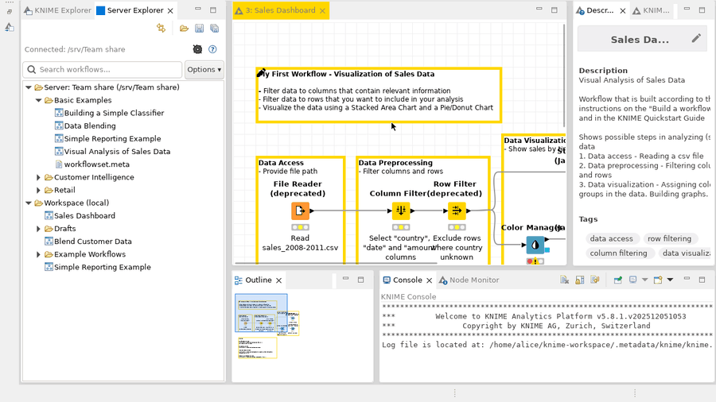
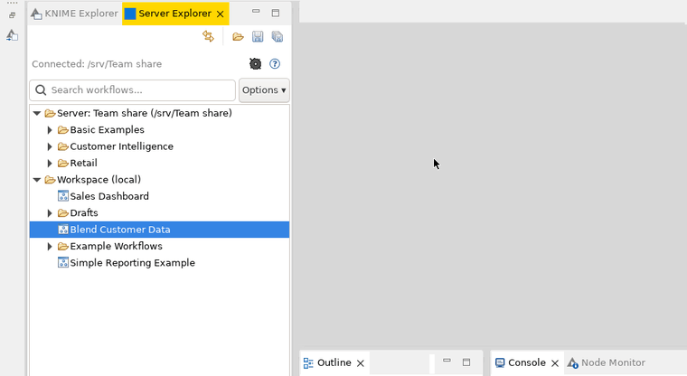

Share KNIME workflows through a workflow server or a shared folder, right next to KNIME Explorer.
Server Explorer adds a tab to KNIME 4.1 and later, and to KNIME 5 in the classic user interface. It shows two lists: a shared place, which is either a server your organization runs or a folder such as a network drive, and your own workspace. Drag workflows between them to share and fetch them.
Click the gear, add the server's address or the folder's path, and test the connection.

Double-click it. Server Explorer copies it into your workspace and opens it.

Drag a workflow or folder from the server onto your workspace.

Drag a workflow from your workspace into a folder on the server.

Type part of a name. You can also search node names and workflow notes.

Also: new folders, renaming, moving, deleting, copying a workflow's address, automatic refresh when colleagues change the server, and several servers to switch between. The user guide (PDF) explains it all, and is also built into KNIME: click the question mark in the tab, or open Help › Help Contents.
It scans for KNIME or lets you select it in a file picker, asks who should
get the plugin, checks the KNIME folder's permissions, and explains any failure. Extract the zip, then run install-ovf.cmd
or ./install-ovf.sh. The
install guide (PDF)
walks through Windows, Linux and macOS, with diagrams.
| KNIME version | Download |
|---|---|
| 5.x | 5.x installer zip |
| 4.1.x | 4.1.x installer zip |
| KNIME version | Update-site URL |
|---|---|
| 5.x | https://shinwachi.github.io/ovf-updates/5x/ |
| 4.1.x | https://shinwachi.github.io/ovf-updates/4.1.x/ |
Run the new version's installer the same way you ran the first one, with the same choice of who gets it. There's no need to remove the old version first. Server lists and settings are kept. To see your version, open File › Preferences › Server Connector: the plugin file name ends with it. The install guide covers the other ways of installing, and removal.
Look for a Server Explorer tab next to KNIME Explorer in the Modeller perspective. On KNIME 5 the tab is only in the classic interface: Menu › Switch to classic user interface. If it isn't visible: View › Other... › KNIME Views › Server Explorer.
Configure a server with the gear in the tab, or under File › Preferences › Server Connector › Servers.
If your KNIME can't reach GitHub, download the archive zip and use Install New Software › Add › Archive instead of the Location URL:
Pre-built binaries only. This site is published via GitHub Actions from a small distribution repository; source is not included here.